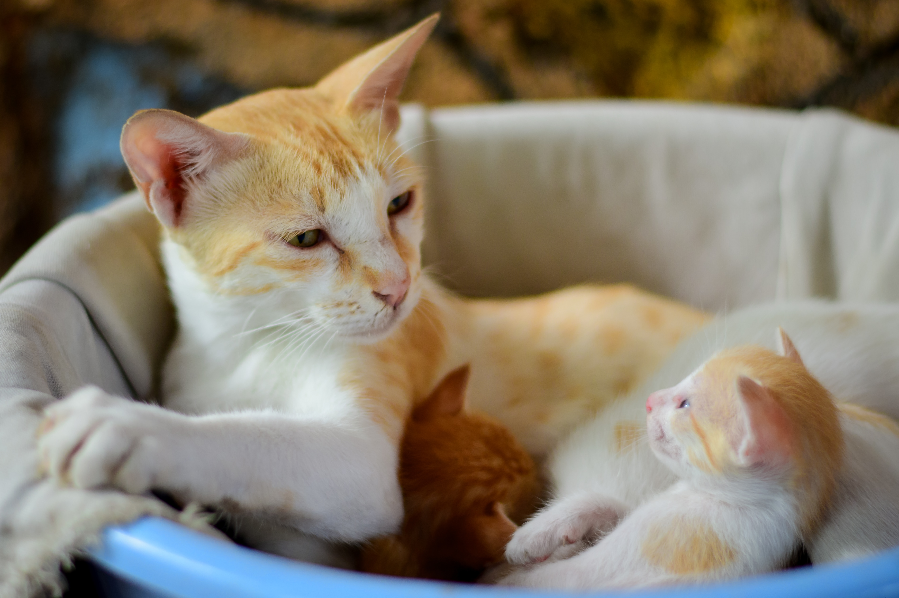

Posted on November 30th, 2023
Welcome To Meown!
This is a blog dedicated to all things cats! Cat owners and feline enthusiasts welcome!
Who am I? My name is Hope Israel, I am the proud owner of my very own white-haired ragdoll cat!
His name is Willow and he is 9 years old. He is a relaxed and cuddly cat and he is often very vocal
when he requires attention.
In this blog you can expect a variety of conversations all revolving around cats! We will cover anything
from feline health tips to fun activities that your cats will love!
~ Representative of Meown Inc.
Posted on November 29th, 2023 ~ Image from https://unsplash.com/
Do Cats Know Their Name?
Cats are very intelligent pets and it is well known that they are able to identify sounds and patterns
with ease. Consider their excitement when they hear their food being poured into a bowl! They are well aware that
that certain sounds mean certain events will occur. Often times however cats may prefer to ignore our calls to them, as
they can go through their solitary moods.
 ~ Representative of Meown Inc.
~ Representative of Meown Inc.
Posted on November 23rd, 2023 ~ Image from https://unsplash.com/
Essential Tips to Raise a Healthy Feline
The age-old question: "How do I care for my cat?".
When you adopt a new cat always ask for as much information as possible from the breeder or pet shop.
It is essential to keep your cats breed, genetics, and temperment in mind when you are in the beginning
stages of adoption. Some breeds such as ragdoll cats are generally known to be laid back and gentle, however
they often suffer with skin conditions and matting in their fur. Short hair cats dont have this issue.
The genetics of your new cat will tell you everything you need to know in the beginning stages.

~ Representative of Meown Inc.
Posted on November 19th, 2023 ~ Image from https://unsplash.com/
Why Does My Cat Bite Me?
Although cats have been domesticated for many many years, there are some aspects
of the wild feline nature that have yet to subside. Cats have a natural instinct to hunt,
often times their playful nature can trigger a hunting mindset. This is why your cat will occasionally switch
from a playful gentle scenario, into less of an enjoyable situation for you. You can attempt to
discourage this behaviour by giving your cat a stern: "no!", or by spritzing a small amount of water onto your cats back.
Only do this when your cat is displaying harmful or unsavory behaviours.
 ~ Representative of Meown Inc.
~ Representative of Meown Inc.
Posted on November 14th, 2023 ~ Image from https://unsplash.com/
How To Throw Your Cat A Birthday Party!
Have you ever thought to yourself: "How do I throw my cat the best birthday party ever?!".
If you have, we're on the same train of thought! Consider everything your cat loves and holds dear,
perhaps a new toy, some lovely cat treats, or even a new cat tower! The possibilities are endless!
The best thing you can give you cat overall, is your love and attention.
 ~ Representative of Meown Inc.
~ Representative of Meown Inc.